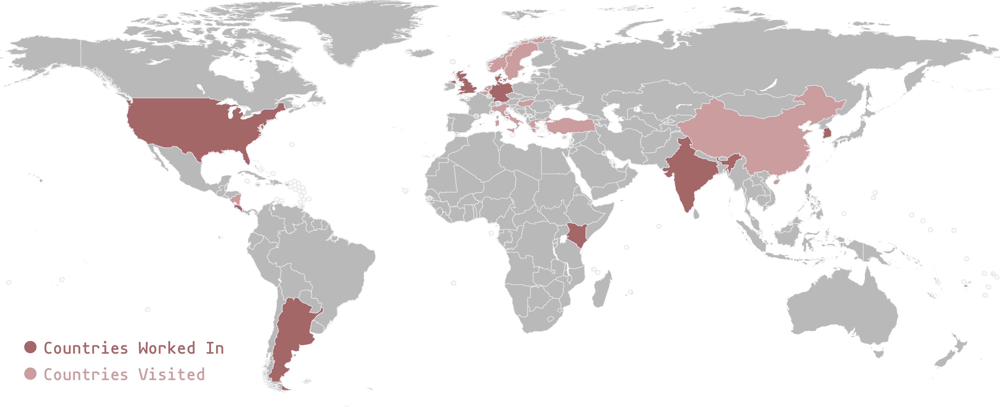

The resevoir is a space dedicated to the long-term.
It was created in 2018 to help Jonathan capture the ideas and thoughts which linger in the margins of his mind.
Links to this entry:
indexlinked entries ⤳
Resevoir started as a blog-like site meant to to document and present already finished projects. It has grown into a place which makes me feel at home on the internet while also providing a space for me to travel through the thoughts and ideas I have had over time. The site is still very much in flux as a result of me experimenting with what structure makes me feel at home.
This corner of the resevoir serves as a space for exploring lifestyles.
I try to create the conditions for myself to do deep work.
Jonathan Skjøtt is doing field research, weaving experimental software, and thinking about mediums.
He is currently a researcher and technologist at takram in London. Previously, Jonathan spent time at The Recurse Center, did service design at Digital Creativity Labs, played with hardware at FabLab Seoul, and made a Massive Open Online Course (MOOC) with Kiron Open Higher Education.
Jonathan studied History and Computater Science at Minerva Schools at KGI. Before then Jonathan went to UWC Costa Rica.
Jonathan is very serious about building out his library. There are several things that he find important to manifest
Country Experience:
Argentina, Costa Rica, Denmark, Germany, India, Kenya, South Korea, United Kingdom, United States
